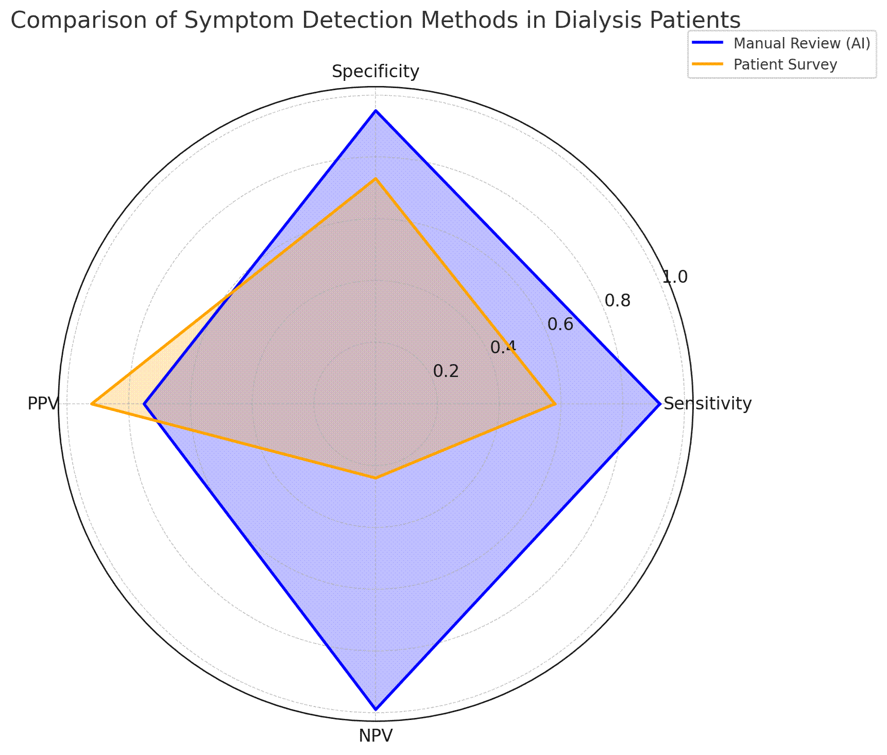
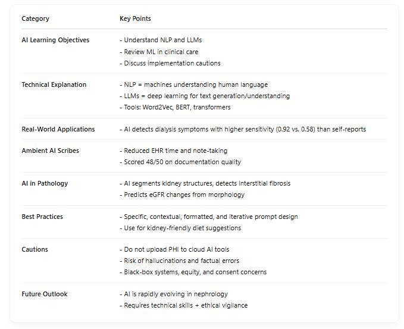
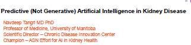
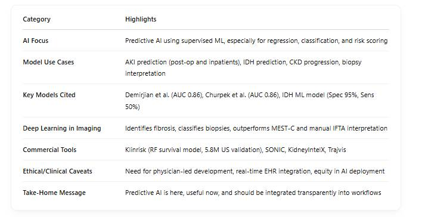
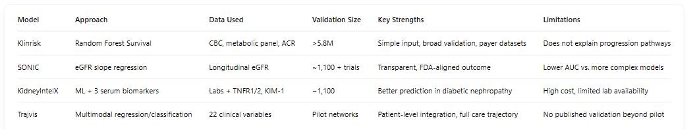
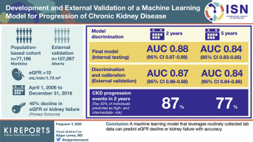
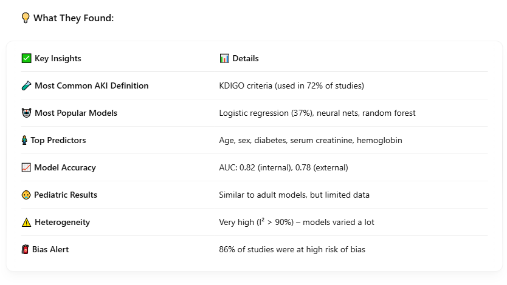
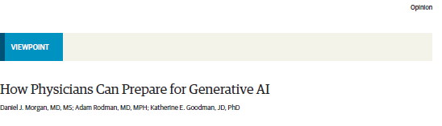
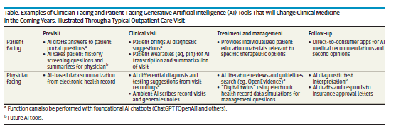

Untitled
Integrating AI into Everyday Kidney Care: Highlights from NKF 2025 in Boston
At this year’s National Kidney Foundation Spring Clinical Meetings in Boston, Dr. @Lili Chan of the Barbara T. Murphy Division of Nephrology and the Windreich Department of Artificial Intelligence and Human Health at the Icahn School of Medicine at Mount Sinai gave a compelling presentation on the integration of artificial intelligence into routine kidney care.
The AI Revolution in Kidney Care
Dr. Chan began her session by polling the audience on their use of AI in clinical practice, highlighting how artificial intelligence is no longer a futuristic concept-it is increasingly embedded in the day-to-day workflows of healthcare. She organized her presentation around three primary learning objectives:
Understanding Natural Language Processing (NLP) and Large Language Models (LLMs)
Reviewing machine learning (ML) applications in clinical care
Discussing risks and responsible approaches to AI implementation
To ground these concepts in clinical relevance, she presented a patient case journey-demonstrating how AI impacts multiple touchpoints, from patients Googling lab results to decision support in clinical encounters and follow-up planning.
Technical Foundations: Making AI Understandable
Dr. Chan provided an approachable explanation of AI’s inner workings, particularly for attendees less familiar with the technology. She described NLP as the subfield of AI that enables machines to analyze and understand human language, and LLMs as its most sophisticated tools-trained with vast datasets to generate and interpret medical text.
She illustrated the vectorization process-how computers convert language into numerical data for processing-using Word2Vec and BERT. The concept of attention mechanisms in transformer models was brought to life with a striking example of the word “bark,” which has entirely different meanings based on context. These demonstrations helped demystify how AI models contextualize medical language.
AI’s Clinical Impact: Real-World Examples in Nephrology
What set Dr. Chan’s presentation apart was her focus on actionable, real-world applications of AI:
- Symptom Detection in Dialysis: Her team showed that AI-driven analysis of clinical notes outperformed patient surveys in identifying symptoms, with sensitivity scores of 0.92 versus 0.58-highlighting AI’s potential to uncover unreported concerns in hemodialysis patients.

Ambient AI Scribes: Data from the Permanente Medical Group demonstrated tangible workflow improvements, including reduced after-hours EHR use, faster documentation, and high-quality note generation (48 out of 50 on scoring metrics).
AI in Pathology: Dr. Chan showcased cutting-edge developments in nephropathology, where AI is used to segment kidney structures, detect interstitial fibrosis, and even predict eGFR decline based on histomorphological data.
Practical Implementation: Prompt Engineering and Use Cases
For clinicians ready to experiment with AI tools, Dr. Chan introduced best practices in prompt engineering. Her guidance included being specific and clear, setting expectations for tone and output format, and iterating through revisions for optimal results. She encouraged participants to try generating LLM-powered diet recommendations customized for kidney patients, as a hands-on exercise in refining AI prompts.
Balanced Perspective: Ethical and Practical Cautions
While optimistic about AI’s future in kidney care, Dr. Chan was careful to underscore the limitations and ethical concerns:
Privacy: AI systems often run in the cloud-meaning uploading protected health information (PHI) poses serious risks.
Hallucinations: AI may fabricate content or citations, which necessitates careful cross-verification by clinicians.
Implementation Barriers: Key challenges include the opaque (“black box”) nature of many models, the need for informed consent, and ensuring AI tools are accessible to all populations.

😊 Thank for for your wonderful talk, we really enjoyed learning from you @Lili Chan ; my friends/colleagues @Jing Miao @Muhammad Yasir Baloch and I were truly fascinated by your presentation.
What are the most significant obstacles preventing frontline nephrologists from using AI tools regularly? → Time, cost, trust, or lack of training? Happy to hear discussions from you all @Lili Chan @Karin Bergling @Len Usvyat @Kim Solez
NKF
At the 2025 NKF Spring Clinical Meetings, Dr. @Navdeep Tangri presented an in-depth overview of how predictive—not generative—AI is transforming kidney care. As a global thought leader in nephrology innovation, he emphasized supervised machine learning’s (ML) role in accurate, efficient, and scalable clinical predictions.

Key Insights and Applications
Supervised ML dominates current AI use in nephrology, especially in predicting AKI, CKD progression, and dialysis-related complications.
Simple models still work: Logistic regression often performs nearly as well as complex ML methods for structured datasets.
Imaging-driven AI is powerful: Deep learning excels in pathology and radiology, where it outperforms traditional biopsy interpretations and integrates with NLP to automate disease registries.
Commercial models are maturing: Tools like Klinrisk and KidneyIntelX are externally validated and used across trials, payers, and health systems.
Integration is key: AI must be embedded into the clinical workflow, with transparency, physician leadership, and real-time decision support.

These are the performance metrics of machine learning models in kidney care, as presented in Dr. Navdeep Tangri’s NKF 2025 talk. It visualizes key AUC, sensitivity, and specificity values for acute kidney injury (AKI) prediction and intradialytic hypotension (IDH) prediction.
ML for CKD Progression Prediction
Objective: Improve early identification and risk stratification of patients at risk of rapid CKD progression—without relying on invasive biomarkers or complex imaging.


Strategic Implications for Practice
| Implementation Principle | Example from Talk |
| Simple ≠ Inferior | Klinrisk uses basic labs but performs as well as complex tools |
| Clinical Workflow Integration First | SONIC/Trajvis are designed for real-time flagging |
| Validate > Invent | Every model Dr. Tangri supports is externally validated |
| Personalization Matters | Models stratify individual risk for resource targeting |
Critical Takeaways from Dr. Tangri
Don’t always default to complex ML—many CKD progression problems are solvable with regression models.
Evaluate models on three axes: Performance, Generalizability, and Clinical Integration.
Demand external validation—not just ROC curves from a single health system.
KFRE has limitations in early CKD; new models must cover CKD stages 1–5 and at-risk populations.
Transparency and simplicity matter: Interpretability boosts clinician adoption.
Given the diversity of CKD patients (by race, SES, comorbidity), how do we ensure model generalizability across health systems and geographies?
How can we build a national registry of AI model performance across institutions to accelerate benchmarking, transparency, and trust? @Navdeep Tangri @Karandeep Singh @Lili Chan @Girish Nadkarni @Karin Bergling @Kim Solez
AKI
The authors conducted a comprehensive search of PubMed, EMBASE, Web of Science, and Scopus up to August 2023. They screened 4816 articles and ultimately included 95 studies evaluating 302 externally validated ML models for AKI-related outcomes across 3.8 million admissions, covering both adult and pediatric populations.
Key Findings

🤔 So… Are These Models Ready for the Real World?
🟢 Yes, because:
They show strong performance in predicting AKI across different settings.
Even simple models work well (logistic regression = MVP).
🔴 No, because:
Too much variation between studies makes results hard to apply at the bedside.
High bias in study design raises concerns.
Not enough real-world testing in diverse patient groups.
🧭 Where Do We Go From Here?
To bring AI into everyday kidney care, we need:
Standardized predictors and outcomes 📏
More external validations 🏥
Better calibration and user-friendly tools ⚙️
Integration into clinical workflows with real-time feedback 👩⚕️👨⚕️
💬 Food for Thought:
What clinical features would you want an AKI prediction model to consider?
Should hospitals invest in developing their own local ML models or adopt published ones?
How can we balance accuracy with explainability in high-risk predictions?
What would it take for you to trust an AI model with real clinical decisions? @Kim Solez @Karin Bergling @Karandeep Singh @Jay Koyner @Kianoush Kashani
📘 What I Learned at #ERA25: AI in Nephrology- A brief synthesis from multiple sessions and there’re more
🤔 Reflections on the Role of AI in Kidney Care
At ERA 2025 in Vienna, the conversation around artificial intelligence (AI) in nephrology has clearly evolved—from curiosity to implementation. This session, CME 9 – Artificial Intelligence for Nephrologists, showcased not just emerging tools but tangible outcomes from AI already being deployed in clinical practice. What stood out was the shift toward practical, integrated applications: systems that predict CKD progression using routine labs, guide anemia management in dialysis, and streamline EMR workflows with large language models. Yet, alongside innovation came important reminders about ethics, governance, and clinician accountability. Below is a structured summary of key insights, tools, and regulatory concerns discussed at the session.
🧠 Foundations: When and Why to Use AI/ML
Talk: AI and Machine Learning Demystified
When AI/ML Excels:
Complex decision-making (e.g., multi-morbidity)
Large, multivariate data
Heterogeneous syndromes like CKD
Personalized care—risk prediction, treatment targeting
Key Benefits:
Captures nonlinear relationships
Integrates structured + unstructured data
Enables scalable clinical decision support
Core Limitations:
Susceptible to biased/poor-quality data
Poor generalizability without external validation
Opaque “black box” nature → interpretability challenge
🧪 AI Tools in Kidney Care Practice
✅ CKD Progression Prediction with Klinrisk
No EHR or advanced biomarkers needed
Uses only routine labs
Outperforms KDIGO and KFRE at 2–4 years
AUC up to 0.86 at 4 years
Built for population-level monitoring in T2DM patients
🧬 Kidney Biopsy & Deep Learning
AI outperforms manual review in morphologic quantification
Predicts graft loss and segments glomerular lesions
87% of regulatory-cleared AI tools = radiology/pathology
🩸 AI-Powered Anemia Management
Tool: Anemia Control Model (ACM)
Active since 2013 in >100 clinics
Decision support for ESA/iron dosing
Outcomes:
25% ESA use reduction
12% lower hospitalization rate
12-year safety track record
💻 Large Language Models (LLMs) in EMRs
GPT-based tools increasingly embedded in EMRs
Use cases:
Inbox triage
Progress note generation
Prior auths & billing support
Patient-specific reminders between visits
⚖️ Regulatory & Ethical Considerations
Speaker: Dr. Pierpaolo Maio
Talk: AI in Nephrology – Useful or Dangerous? (CON)
Regulatory Frameworks (EU AI Act, MDR, PLD):
AI for nephrology = “high-risk” designation
Requires CE mark, ISO 13485, surveillance
Developers + clinicians share legal liability
Governance Imperatives:
Mandatory human oversight
Transparent AI logic
High-value/low-risk cases prioritized
Incident reporting for AI-related errors mandatory
✨ Final Thoughts
AI is transitioning from conceptual hype to practical utility in nephrology. As seen at #ERA25, its applications—from CKD prediction and glomerular image analysis to automated ESA dosing—are yielding real-world benefits. However, success hinges on data quality, regulatory compliance, and ongoing clinician oversight.
The future of AI in nephrology is not just about algorithms—it is about responsible integration, trust-building, and ensuring that every decision still begins and ends with the patient.
This is just my personal summary of what I learned from the #ERA25 session on AI in nephrology. I may have missed some points, and others might have different takeaways. Feel free to add or share more insights! 😊🙏
“How Physicians Can Prepare for Generative AI.” JAMA Internal Medicine, Oct 13, 2025

Generative artificial intelligence (GenAI) is no longer a futuristic concept-it has arrived in clinics, hospitals, and patient portals. While today’s AI scribes and documentation tools may seem revolutionary, the authors emphasize that these are just the beginning. The next generation of GenAI will not only summarize notes-it will help diagnose, counsel, and even manage clinical conditions. Physicians who understand how to integrate and supervise these systems will lead the transformation of healthcare.

Using AI as a Partner
Treat AI as a partner, not just a tool. It can reason and communicate but requires clinical oversight and validation.
Prompting matters. The way a question is framed affects the quality of the response; rephrasing and specifying the AI’s “role” (e.g., “You are an emergency physician…”) can improve accuracy.
Data input quality determines output quality. Clinicians should provide complete, relevant data (e.g., key labs, discharge summaries).
Interactive learning is key. Physicians should probe chatbot reasoning-ask why and where it obtained information to uncover reasoning flaws.
Clinical Workflow and Responsibility
GenAI will reshape workflows. Clinicians will shift from writing to editing, as AI scribes generate notes and summaries.
Legal accountability remains with clinicians. Physicians are responsible for AI-generated documentation until regulatory oversight evolves.
AI outputs require review. Clinicians must verify accuracy before signing notes or using AI-suggested recommendations.
Future FDA oversight will likely extend to documentation and decision-support tools, but clinicians should demand performance validation now.
Evolving Physician–Patient Relationship
Patient expectations are changing. Many patients already use GenAI to interpret symptoms, lab results, and possible diagnoses.
The physician’s role will shift-from sole knowledge authority to expert adjudicator who validates AI- or patient-generated insights.
Human skills gain importance. Empathy, physical examination, and shared decision-making will distinguish clinicians from algorithms.
Education and Skill Development
All clinicians need foundational AI literacy. Understanding how LLMs work is now part of medical competence.
Formal training is emerging. Institutions like NYU Langone and Harvard offer GenAI prompt training; the American College of Physicians offers short AI courses.
Hands-on experience with safe, HIPAA-compliant tools (e.g., Microsoft Copilot, ChatGPT Enterprise) helps clinicians build confidence.
Ethical literacy is essential. Understanding bias, hallucination, and patient data protection is as important as technical skills.
Future Outlook
GenAI will evolve from assistant to agent. Future “agentic” systems may independently collect histories, counsel patients, or generate management plans-requiring new oversight, ethics frameworks, and trials to assess safety and efficacy.
https://jamanetwork.com/journals/jamainternalmedicine/fullarticle/2840192